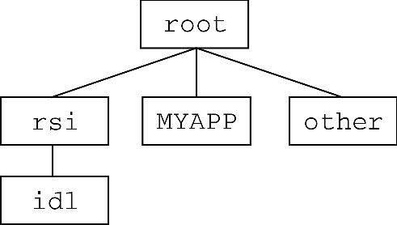

Different operating systems use different path specification syntax and directory separation characters. The following table summarizes the different characters used by different operating systems; see !PATH for further details on path specification.
|
Operating System |
Directory Separator |
Path Element Separator |
|
UNIX |
/ (forward slash) |
: (colon) |
|
Windows |
\ (backward slash) |
; (semicolon) |
As a result of these differences, specifying filenames and paths explicitly in your IDL application can cause problems when moving your application to a different platform. You can effectively isolate your IDL programs from platform-specific file and path specification issues by using the FILEPATH , PATH_SEP , and DIALOG_PICKFILE functions.
To allow users of your application to choose a file at runtime, use the DIALOG_PICKFILE function. DIALOG_PICKFILE will always return the file path with the correct syntax for the current platform. Other methods (such as reading a file name from a text field in a widget program) may or may not provide a proper file path.
To give your application access to a file you know to be installed on the host, use the FILEPATH function. By default, FILEPATH allows you to select files that are included in the IDL distribution tree. Chances are, however, that a file you supply as part of your own application is not included in the IDL tree. You can still use FILEPATH by explicitly specifying the root of the directory tree to be searched.
|
 |
For example, suppose your application is installed in a subdirectory named MYAPP of the root directory of the filesystem that contains the IDL distribution. You could use the FILEPATH function and set the ROOT_DIR keyword to the root directory of the filesystem, and use the SUBDIRECTORY keyword to select the MYAPP directory. If you are looking for a file named myapp.dat, the FILEPATH command looks like this:
file = FILEPATH('myapp.dat', ROOT_DIR= root , SUBDIR='MYAPP')
The problem that remains is how to specify the value of root properly on each platform. This is one case where it is very difficult to avoid writing some platform-specific code. We could write an IDL CASE statement each time the FILEPATH function is used. Instead, the following code segment sets an IDL variable to the string value of the root of the filesystem, and passes that variable to the ROOT_DIR keyword. The CASE statement looks like this:
CASE !VERSION.OS_FAMILY OF
'unix' : rootdir = '/'
'Windows' : rootdir = STRMID(!DIR, 0, 2)
ENDCASE
file = FILEPATH('myapp.dat', ROOT=rootdir, SUBDIR='MYAPP')
Note that the root directory under Unix is well defined, whereas the root directory on a machine running Microsoft Windows must be determined by parsing the IDL system variable !DIR. Under Windows, the root is assumed to be the drive letter of the hard drive and the following colon — usually “C:”.